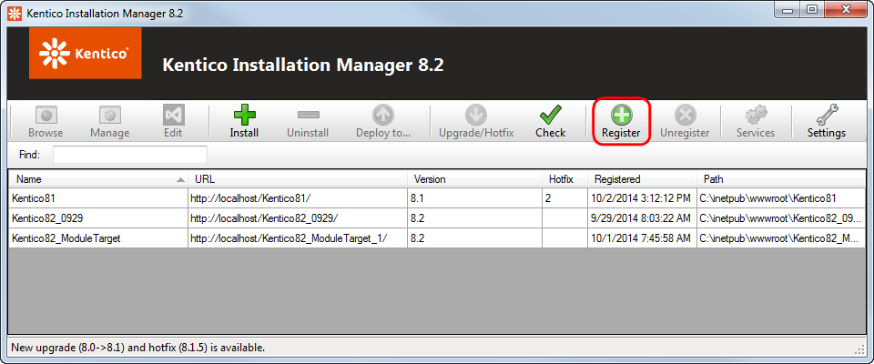
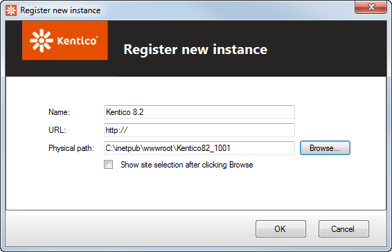

Registering an instance in KIM
When you install a new Kentico instance on a machine, it is automatically registered within Kentico Installation Manager. In some cases though, you may need to register instances manually. For example:
Instances transferred or copied onto the machine without going through the installation
Microsoft Azure projects
Registering an instance in KIM
Requirements:
KIM is compatible with Kentico instances starting from the previous major version. For example, you can register instances of Kentico 10 or 11 in KIM 11.
You can only register complete web projects that use the standard folder structure (including the solution file, CMS and Lib sub-folders etc.). For example, you cannot add web site deployments of the CMS folder as instances in KIM.
Click Register on the main toolbar.

Enter the following details:
Name – identifying name of the instance displayed in the Name column in the list of instances.
URL – the URL under which the instance is accessible.
Physical path – path to the instance's web project root folder in the file system.
Show site selection after clicking Browse – if enabled, the tool displays a dialog with available web sites of the particular instance after clicking the Browse button (useful for multi-site instances).

Registering an Azure instance in KIMClick OK.
The KIM registers your instance and displays it in the list of managed instances.
Where is the information stored
Information about registered instances is stored in c:\ProgramData\KIM\kim.xml. The root <sites> element contains <item> elements that represent individual registered instances. The <item> elements have the following sub-elements representing properties of the registered instances:
<guid> – unique identifier of the instance (not related to the application GUID in the web.config file of the given instance).
<url> – URL under which the instance is accessible.
<name> – identifying name of the instance displayed in the Name column in the list of instances.
<version> – version of Kentico.
<path> – path to the instance's web project root folder in the file system.
<created> – date and time when the instance was registered in Kentico Installation Manager.
<hotfix> – number of the latest hotfix applied to the instance.
<netversion> – represents the .NET Framework version used by the instance. The stored number does not match the .NET version, using the following encoding instead:
.NET version
Encoding number
2
2
3.5
4
4
8
4.5
16
4.6
32
4.7
64
<showlist> - indicates if a dialog box with available web sites on the given instance is displayed after clicking the Browse button.
<?xml version="1.0"?><sites> <item> <guid>6085ee02-8fff-4978-abd1-1a0261a57724</guid> <url>http://localhost/Kentico11/</url> <name>Kentico11</name> <version>11.0</version> <path>C:\inetpub\wwwroot\Kentico11</path> <created>2016-12-24T08:26:39</created> <hotfix>0</hotfix> <netversion>32</netversion> <showlist>1</showlist> </item> ...</sites>